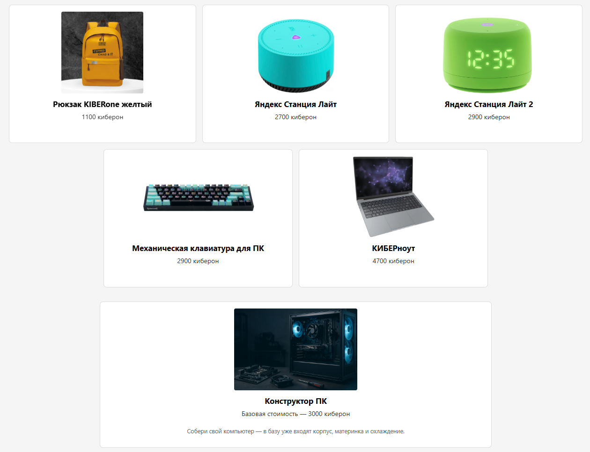

Меня зовут Алексей Владимирович. Я — ваш учитель.
Также со мной работает Александр — ассистент.
Если у вас возник вопрос, обращайтесь ко мне или к Александру с поднятой рукой.
Ко мне обращаться: либо Алексей Владимирович, либо учитель.
Кибероны — внутренняя валюта нашей школы, за которую можно получить призы.
Например:
Вы получаете 10 киберонов просто за посещение урока.
На моих уроках вы должны соблюдать дисциплину.
Когда я объясняю, запрещается:
- шуметь: разговаривать, разговаривать с соседом, нажимать на клавиатуру; клацать мышкой;
- перебивать меня;
- отвлекать класс, соседа;
- играть за компьютером;
- монитор трогать пальцами, крутить и показывать соседу
За нарушение дисциплины я буду назначать штрафы.
За злостные (тяжёлые) нарушения дисциплины вы будете изгнаны из школы.
Чтобы что-то сказать, вам нужно:
- Поднять руку
- Получить моё разрешение на ответ
- Говорить
Когда я говорю: "Можно не поднимать руку" или "Отвечаем с места", можно отвечать с места сидя и не поднимая руку.
Когда мы делаем самостоятельные задания, можно шуметь: общаться, но не кричать.
План работы со Scratch:
| Первая половина урока: | Вторая половина урока: |
|
|
Алгоритм — пошаговая последовательная инструкция для решения задачи.
Фича (англ. feature) — функционал/возможность работы проекта, благодаря которому можно что-то сделать/достичь.
Переменная — ячейка в памяти компьютера, предназначенная для хранения данных.
Команда — то, что должен выполнить компьютер.
Программа — команды, записанные на формальном языке (язык программирования / среда визуального программирования), которые выполняет компьютер.
Функция (подпрограмма) — набор команд, объединённых в одну команду.
Итерация (повтор) — повторение команды (программы).